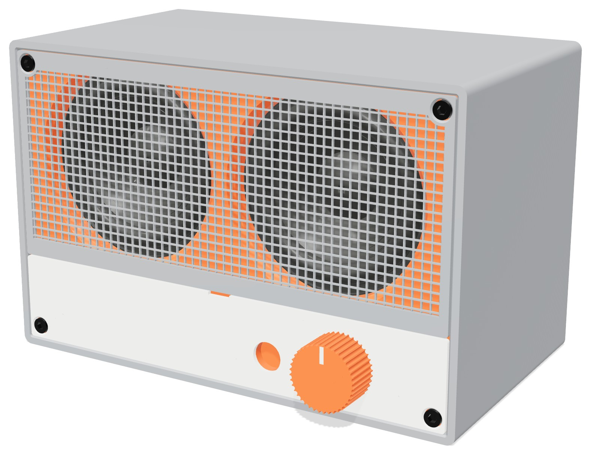
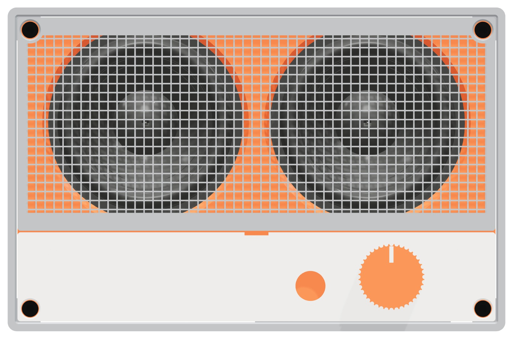
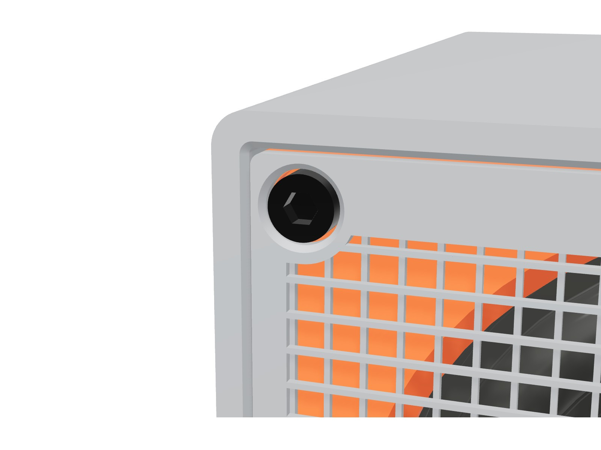
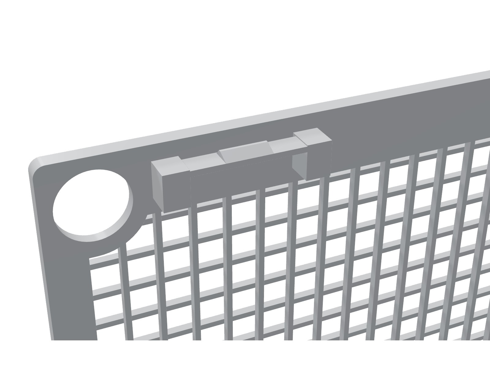
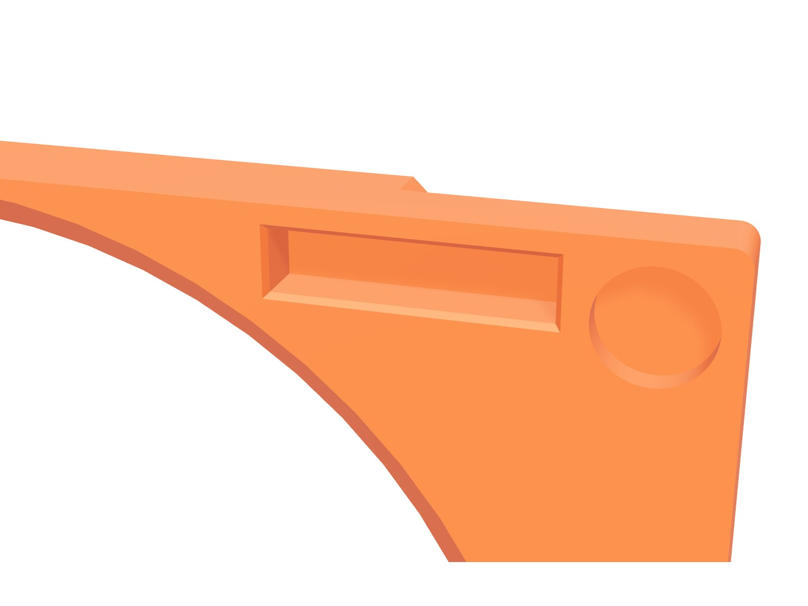
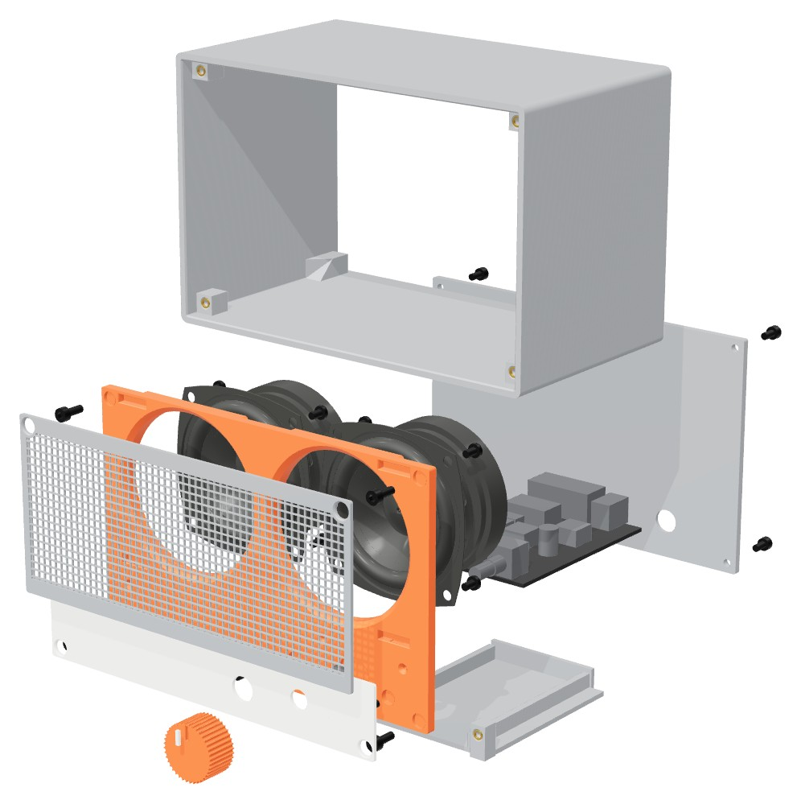

Bluespeaker Mini
A Bluetooth desk speaker that you print in three colours of PLA. Socket head screws on the face. Covers that snap on. The panels and covers print with no support.

Design
Four black socket head cap screws hold the front module in the sleeve. Their heads go through round ports in the grille and the strip. Each head is flush with the face.


6.0 mm ports for 5.5 mm heads. A thin orange ring of the baffle shows around each head. A 0.5 mm chamfer at 45° prints face down with no support.

Four catches on each cover back. Each beam is one 0.5 mm line that bridges between two posts. It flexes along its printed lines, not across the layers.

A lip at each pocket mouth holds the catch. The lip face is at 45°, so a pull releases the grille. A 0.05 mm preload holds the grille flat.
Tech Specs
Width: 166 mm
Height: 108 mm
Depth: 94 mm
Sleeve wall 3 mm. Corner radius 3 mm.
Sealed, about 1.1 L. Both drivers share the volume.
About 0.55 L for each driver: Qtc near 1.0, F3 near 150 Hz.
2 × Dayton Audio PC68-4, 2.5 in full-range, 4 Ω
Fs 117 Hz, Qts 0.65, Vas 0.7 L. Rear-mounted on 3 mm spacer frames, 74 mm apart.
ZK-502C Bluetooth amplifier board
Lies flat on a printed tray. The volume control nut holds the board against the baffle.
Bluetooth
3.5 mm AUX in, on the front
Volume knob, on the front
12–24 V DC adapter, 2 A or more, into the rear panel
Check the plug size of the ZK-502C socket before you buy the adapter.
Grey: sleeve, grille, rear panel, tray, feet
Orange: baffle (shows through the grille), knob
White: control strip, knob mark
Lattice of 0.5 mm ribs at a 3.0 mm pitch, about 69 % open
Two other options: slicer-infill grille (Cura 3MF) and a round-hole grille for resin. Grille and strip each snap on with four catches. Pry slot at the top edge of the strip.
M3 socket head cap screws (ISO 4762): 6 × M3 × 8, 4 × M3 × 6
M3 pan head screws: 8 × M3 × 5 (drivers)
M3 heat-set inserts, short (3 mm long, 4.0 mm hole): 18
LulzBot TAZ Workhorse SE, 0.5 mm tool head, 2.85 mm PLA
Klipper firmware. Cura 5.13 profiles in cura/.
Made to print
Heights use the 0.25 mm layer. Widths use the 0.5 mm line. Calibrated profiles.
| File | Colour | Orientation | Cura profile |
|---|---|---|---|
| sleeve.stl | Grey | Front opening down. Supports below the four front posts only. | PLA Shell 0.25 |
| baffle.stl | Orange | Front face down. Supports off. | PLA Parts 0.25 |
| grille.stl | Grey | Front face down. One line for each rib. | PLA Grille 0.25 |
| grille_infill*.3mf | Grey | Front face down. Cura infill makes the mesh. | PLA Grille Infill 0.25 |
| control_strip.stl | White | Front face down. | PLA Parts 0.25 |
| rear_panel.stl | Grey | Outer face down. | PLA Parts 0.25 |
| tray.stl, feet.stl | Grey | Flat. | PLA Parts 0.25 |
| knob.stl, knob_mark.stl | Orange, white | Knob front face up. Glue the mark into the groove. | PLA Parts 0.25 |
| Setting | Value | Profiles |
|---|---|---|
| Shrinkage compensation XY | 100.21 % | All |
| Shrinkage compensation Z | 100 % | All |
| Printing temperature | 220 °C | All |
| Horizontal expansion | 0.095 mm | Shell, Parts |
| Hole horizontal expansion | 0.17 mm | Shell, Parts |
The Grille profiles have no expansion: it would change the width of each one-line rib. The model adds the expansion to the grille catches (0.095 mm) and ports (0.075 mm).
| Feature | Size | Layers or lines |
|---|---|---|
| Grille and strip | 1.5 mm | 6 layers |
| Baffle | 4.0 mm | 16 layers |
| Front counterbore | 1.5 mm | 6 layers |
| Membrane | 0.25 mm | 1 layer |
| Snap catch | 2.5 mm | 10 layers |
| Snap beam | 0.5 mm | 1 line |
| Ring around a head port | 1.5 mm | 3 lines |
| Head clearance | 0.25 mm | ½ line |
| Part | Holes | Drill | Depth |
|---|---|---|---|
| Sleeve | 4 front post holes (inserts) | 4.0 mm | 7 mm |
| Tray | 2 tab holes (inserts) | 4.0 mm | Through the tab |
| Baffle | 6 counterbore membranes | 3.4 mm | From the back |
Build

| Item | Qty | Use |
|---|---|---|
| Dayton Audio PC68-4 (Parts Express 295-150) | 2 | Drivers |
| ZK-502C Bluetooth amplifier board | 1 | Amplifier, Bluetooth, volume control |
| DC adapter, 12–24 V, 2 A or more | 1 | Power |
| M3 heat-set insert, short (3 mm long, 4.0 mm hole) | 18 | Sleeve 8, spacer frames 8, tray 2 |
| M3 × 8 socket head cap screw | 6 | Baffle 4, tray 2 |
| M3 × 6 socket head cap screw | 4 | Rear panel |
| M3 × 5 pan head screw | 8 | Drivers |
| Speaker wire, 2 × 0.5 mm², 150 mm | 2 | Drivers to the amplifier |
| Closed-cell foam tape, 3 × 6 mm | 0.6 m | Driver flanges, panel seams |
| Drills: 3.4 mm and 4.0 mm | 1 each | Pilot holes and membranes |